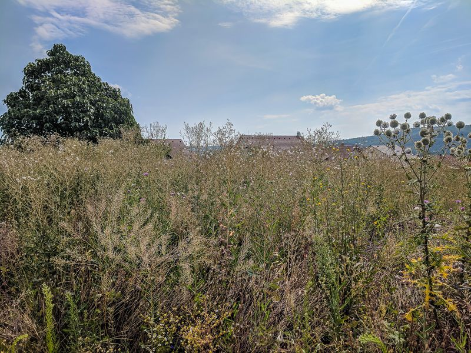
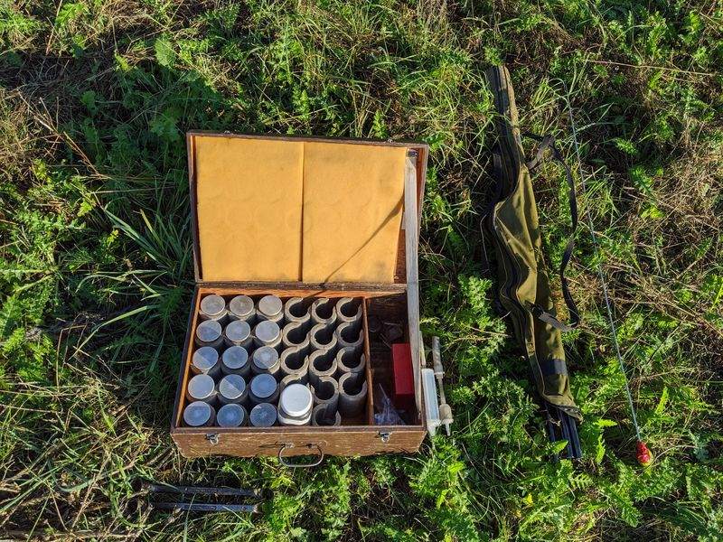
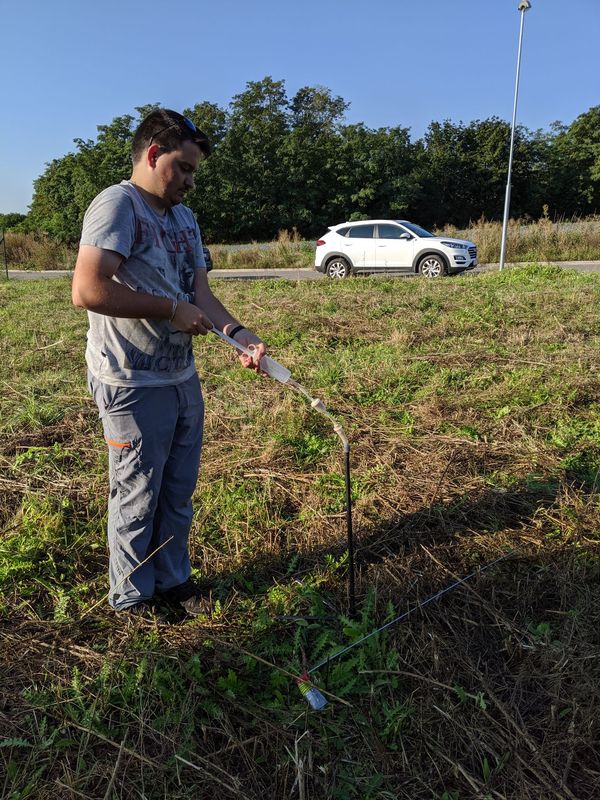
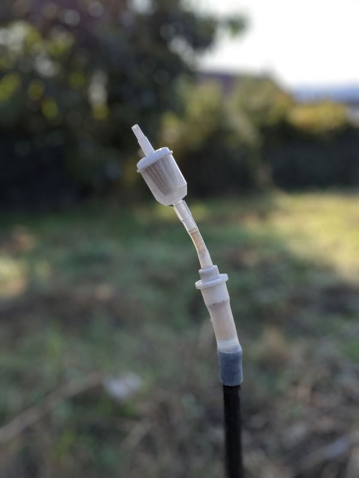
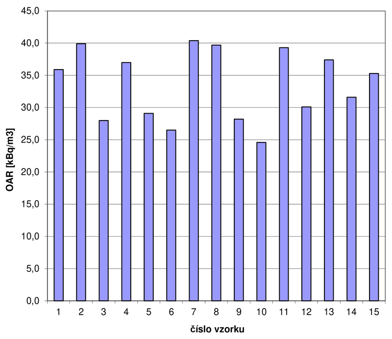
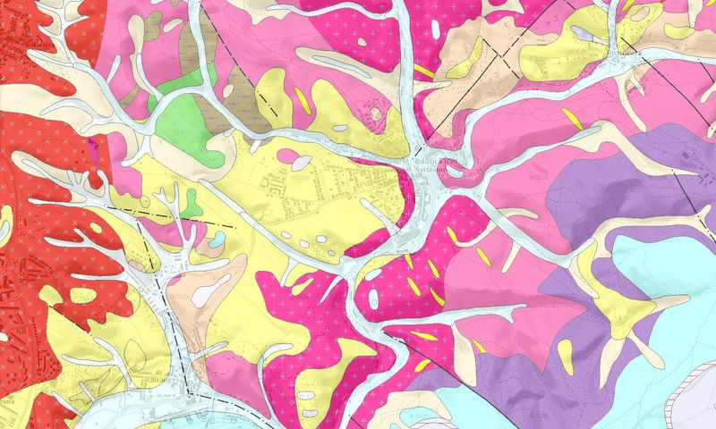
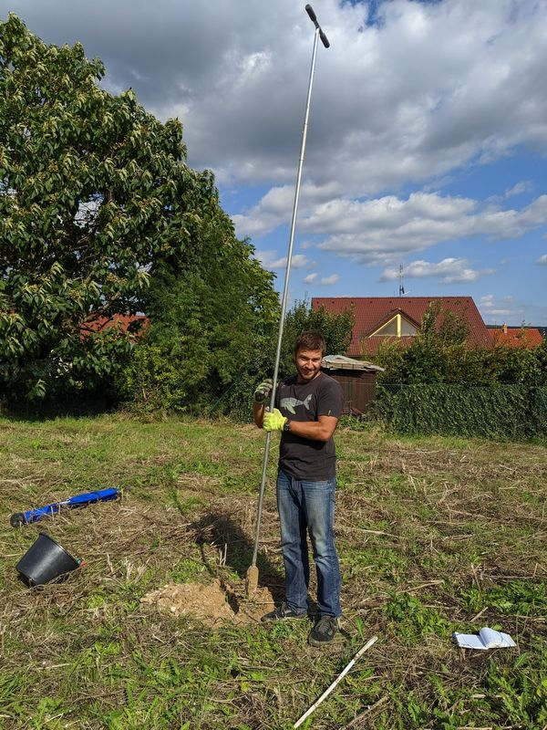
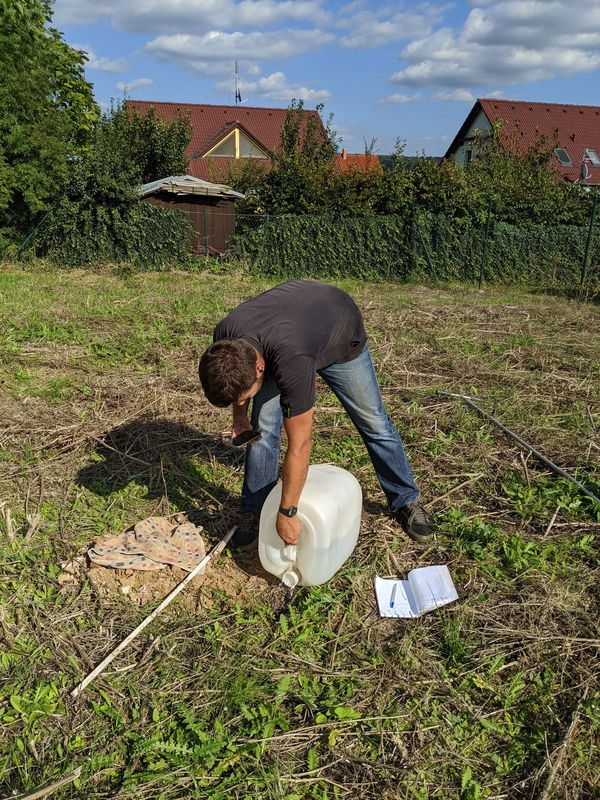

Náš projektant nám doporučil provést inženýrskogeologický (IG), hydrogeologický (HG) a radonový průzkum. IG průzkum slouží k posouzení základových poměrů staveniště a HG průzkum k posouzení vsakovacích poměrů. Tato měření se budou projektantům hodit, aby dokázali dobře navrhnout základovou desku a vsakovací zařízení pro zasakování srážkových vod. Stanovení radonového indexu pozemku bude potřeba doložit stavebnímu úřadu při žádosti o povolení stavby. Radon ve skutečnosti není potřeba příliš řešit, protože v domě bude řízené větrání.
Hned po dokončení studie domu (srpen 2019) jsem se pustil do poptávání. Oslovil jsem celkem 4 firmy. Zástupce první firmy mi odpověděl, že jsou příliš vytížení, že bych musel čekat cca 2 měsíce a ať se zkusím obrátit na jinou konkurenční firmu. Další firma mi odpověděla, že IG průzkum a měření radonu nedělají. Třetí firma byla extrémě drahá a navíc ani nedělala HG průzkum. IG a měření radonu by vyšlo kolem 30k Kč. Rozumnou nabídku jsem dostal až od firmy AGS Hrubý s.r.o. z Boskovic, a tak jsme se domluvili na spolupráci.
Vše proběhlo hladce. Předal jsem panu Hrubému situační výkres a poprosil ho, aby mně dal dopředu vědět, že bych se rád měření zúčastnil. Před akcí jsem ještě nechal posekat a zmulčovat vysoký porost, který nám bují na pozemku. S tím nám už druhým rokem pomáhá pan Michal Pavelka, který je vybaven křovinořezem. Čekali jsme zhruba 2 týdny. Den před akcí se mi ozval geolog. Ráno pak proběhlo měření radonu, odpoledne IG a HG, které prováděl jiný pracovník. Výsledky jsme obrželi za pár dní ve 3 PDF dokumentech (každé měření zvlášť, celkem 14 stran). Celé to stálo necelých 10k Kč. Se spoluprací jsme byli spokojeni a pana Hrubého můžeme určitě doporučit.

Měření radonového indexu probíhá následujícím způsobem. Vzorky půdního vzduchu jsou odebrány z hloubky 80 cm pomocí dutých tyčových sond metodou ztraceného hrotu a přeneseny pomocí velkokapacitní stříkačky Janette do předem vyčerpaných Lucasových komor. Lucasovy komory jsou následně v laboratoři analyzovány měřícím přístrojem LUK 4A. Celkem bylo odebráno 15 vzorků. Výsledný radonový index pozemku je: střední.




Inženýrskogeologický průzkum spočívá v archivní rešerši (archiv ČGS), odkryvných pracech (ručně vrtané sondy), posouzení místní ekologie (ochranná pásma) a interpretace výsledků (konfrontace s výsledky řešerše archivních dat). Zájmová oblast leží v geomorfologickém celku Drahanská vrchovina. Z archivu ČGS bylo zjištěno, že v okolí nebyly realizovány žádné inženýrskogeologické a geotechnické průzkumné práce. Na pozemku byla vyvrtána sonda o průměru 70 mm do hloubky 3 m. Dva návrty byly ukončeny v ručně nevrtatelných podmínkách – kamenitá frakce. Všechny vrty jsou v závěrečné zprávě vyznačeny na situačním výkresu. V hloubce 0.5 - 1 m se vyskytuje navážka, ve vyšší hloubce potom spraš (třída F6, geotechnický typ GT1). Jedná se o světle hnědou až nažloutlou, vápnitou, tuhou spraš s nízkou plasticitou. Stupeň konzistence a únosnost zastižené zeminy mírně narůstá s hloubkou. Ve vrchních částech se vyskytují spraše tuhé konzistence. Na bázi jsou přítomny spraše tuhé až pevné konzistence. Zeminy GT1 se vyznačují standardní únosností. Co se týče kvality půdy, dle našeho geologa je to na české poměry takový průměr. Hladina podzemní vody nebyla zastižena. Při průzkumu nebyly odebrány žádné vzorky - posouzení geologických poměrů proběhlo přímo na místě. Staveniště je vyhovující jak po stránce geologických a hydrogeologických poměrů, tak i z hlediska ekologie.

Při hydrogeologickém průzkumu se provádí vsakovací zkouška a simuluje se činnost vsakovacího zařízení. Experiment spočívá v tom, že do vyvrtané jámy o hloubce 3 m se nalije voda a sleduje se pokles hladiny v čase. Cílem je stanovení koeficientu vsaku Kv. Závěrečná zpráva dále obsahuje výpočty pro odhad nutné vsakovací plochy, návrh vsakovacího zařízení s retencí pro úplné zasakování srážkových vod a další doporučení ohledně vybudování vsakovacího zařízení. Byla zjištěna poměrně dobrá vertikální propustost. Důležité je zamezit pronikání srážkové vody a vod z jarního tání do podzákladí.

